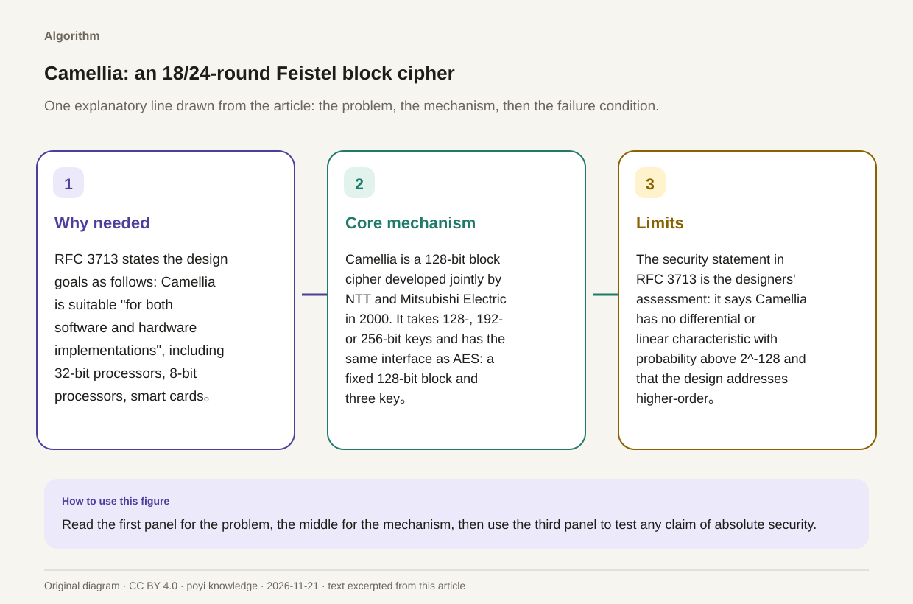
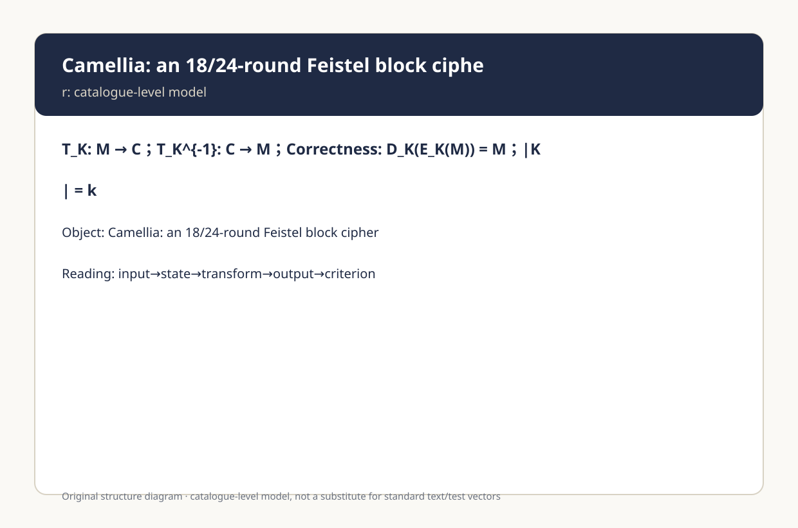

Principles
Algorithm: Camellia (Camellia 加密算法). Camellia is a 128-bit block cipher developed jointly by NTT and Mitsubishi Electric in 2000. It takes 128-, 192- or 256-bit keys and has the same interface as AES: a fixed 128-bit block and three key lengths. It uses a Feistel structure: 128-bit keys run 18 rounds and 192/256-bit keys run 24 rounds, with an FL/FL^-1 layer after every six rounds and 128-bit whitening "before the first round and after the last round". For a 128-bit key the data path is:
M = L0 || R0
L0 || R0 = M XOR (kw1 || kw2)
for r = 1..18, except r = 6, 12:
Lr = R(r-1) XOR F(L(r-1), kr)
Rr = L(r-1)
for r = 6, 12:
Lr' = R(r-1) XOR F(L(r-1), kr)
Rr' = L(r-1)
Lr = FL(Lr', ke(2r/6 - 1))
Rr = FL^-1(Rr', ke(2r/6))
C = (R18 || L18) XOR (kw3 || kw4)
A 192/256-bit key replaces the 18 rounds with 24 and inserts an FL/FL^-1 layer after rounds 6, 12 and 18 (ke1..ke6), ending with C = (R24 || L24) XOR (kw3 || kw4). Decryption uses the same data path with the subkeys reversed: kw1 with kw3, kw2 with kw4, k1 with kn, k2 with k(n-1), and the remaining round and FL-layer subkeys in reverse order. The F function is F(X, k) = P(S(X XOR k)). S maps the eight input bytes through s1, s2, s3, s4, s2, s3, s4 and s1 in that order; P applies fixed linear combinations to the eight bytes:
z'1 = z1 XOR z3 XOR z4 XOR z6 XOR z7 XOR z8
z'2 = z1 XOR z2 XOR z4 XOR z5 XOR z7 XOR z8
z'3 = z1 XOR z2 XOR z3 XOR z5 XOR z6 XOR z8
z'4 = z2 XOR z3 XOR z4 XOR z5 XOR z6 XOR z7
z'5 = z1 XOR z2 XOR z6 XOR z7 XOR z8
z'6 = z2 XOR z3 XOR z5 XOR z7 XOR z8
z'7 = z3 XOR z4 XOR z5 XOR z6 XOR z8
z'8 = z1 XOR z4 XOR z5 XOR z6 XOR z7
FL and FL^-1 operate on 32-bit halves. Let the input be XL || XR and the subkey be klL || klR:
FL: YR = ((XL & klL) <<< 1) XOR XR
YL = (YR | klR) XOR XL
FL^-1: XL = (YR | klR) XOR YL
XR = ((XL & klL) <<< 1) XOR YR
Here <<< is a 32-bit left rotation and &, | and XOR are bitwise AND, OR and exclusive-or. FL and FL^-1 are inverses; they mix a key-dependent one-bit rotation and OR into the data and form the key-dependent layer inserted every six rounds. There are four S-boxes: s1 is a 256-byte table, s2(x)=s1(x) rotated left by 1, s3(x)=s1(x) rotated left by 7 (equivalent to a right rotation by 1), and s4(x)=s1(x rotated left by 1); all rotations are within 8 bits. The specification also gives the algebraic form s1(x)=h(g(f(0xC5 XOR x))) XOR 0x6E, where f and h are affine maps and g is inversion in GF(2^8) with 1/0 defined as 0, over the field defined by beta^8+beta^6+beta^5+beta^3+1=0. Tables 4 to 7 of the specification list all 256 entries of the four S-boxes. The key schedule writes the key as KL and KR and derives KA, KB and the subkeys. The three key lengths differ:
- 128-bit: KL=K, KR=0. - 192-bit: KL is the leftmost 128 bits; KR is the rightmost 64 bits concatenated with their bitwise complement,
KR = (K[128..191] || ~K[128..191]). - 256-bit: KL is the leftmost 128 bits and KR is the rightmost 128 bits. KA and KB are derived with F and six 64-bit constants Sigma1..Sigma6:
D1 || D2 = KL XOR KR
D2 = D2 XOR F(D1, Sigma1)
D1 = D1 XOR F(D2, Sigma2)
D1 = D1 XOR high64(KL)
D2 = D2 XOR low64(KL)
D2 = D2 XOR F(D1, Sigma3)
D1 = D1 XOR F(D2, Sigma4)
KA = D1 || D2
D1 || D2 = KA XOR KR
D2 = D2 XOR F(D1, Sigma5)
D1 = D1 XOR F(D2, Sigma6)
KB = D1 || D2
The six constants are:
Sigma1 = A09E667F3BCC908B
Sigma2 = B67AE8584CAA73B2
Sigma3 = C6EF372FE94F82BE
Sigma4 = 54FF53A5F1D36F1C
Sigma5 = 10E527FADE682D1D
Sigma6 = B05688C2B3E6C1FD
The specification defines them as the 16 consecutive hexadecimal digits starting at the second hexadecimal place after the point in "the hexadecimal representation of the square root of the" first through sixth primes. The subkeys are the left or right halves of 128-bit rotations of KL, KR, KA and KB. A 128-bit key produces four whitening subkeys kw1..kw4, eighteen round subkeys k1..k18 and four FL-layer subkeys ke1..ke4; 192/256-bit keys produce four kw, twenty-four k and six ke. Tables 2 and 3 of the specification list the rotation amount and half selection for every subkey; for example, with a 128-bit key kw1 = high64(KL<<<0), kw2 = low64(KL<<<0), k1 = high64(KA<<<0) and k2 = low64(KA<<<0), k10 is only the right half of KL<<<60, and kw3/kw4 are the two halves of KA<<<111. For 192/256-bit keys kw3/kw4 come from KB<<<111 instead of the 128-bit KA<<<111, while k23/k24 come from KL<<<111 just like the 128-bit k17/k18. The right half of KR for a 192-bit key is the bitwise complement of the rightmost 64 bits. This is a specified key construction, not an optional implementation step; treating KR as an ordinary right 128-bit half produces incorrect subkeys for all 24 rounds.

Why it matters
RFC 3713 states the design goals as follows: Camellia is suitable "for both software and hardware implementations", including 32-bit processors, 8-bit processors, smart cards, cryptographic hardware and embedded systems; its key setup time is excellent and its key agility is superior to AES. The RFC also notes that Camellia has the same 128-bit "block and 128/192/256-bit" key interface as AES, but is a different algorithm.
Camellia received explicit recognition in standardization evaluations: the NESSIE project selected it as a recommended cryptographic primitive, and Japan's CRYPTREC included it "in the list of cryptographic techniques for" e-Government systems. ISO/IEC 18033-3:2010 lists it with AES and SEED among 128-bit block ciphers, and that edition was still confirmed as current in 2025.
RFC 3713 Section 4 says the designers evaluated Camellia with "state-of-the-art cryptanalytic techniques" and confirmed that no differential or linear characteristic holds with probability greater than 2^-128, so differential and linear attacks are extremely unlikely to succeed against the full 18-round Camellia; it also says the design addresses higher-order differential, interpolation, related-key and truncated differential attacks. This article treats those statements as the designers' and RFC's assessment, not as a proof against every attack.
Compared with AES, Camellia is suitable for 8-bit and 32-bit implementations and has excellent key setup time. This article treats Camellia as a separate algorithm alongside AES, not a replacement standard; the two are not interchangeable because their algorithm identifiers and test vectors differ, although both support 128/192/256-bit keys.
Applications
CMS: RFC 3657 (January 2004, Standards Track) specifies Camellia for CMS content encryption and key wrapping. The content-encryption OIDs are id-camellia128-cbc, id-camellia192-cbc and id-camellia256-cbc, using CBC with a 16-byte IV; the AlgorithmIdentifier parameters MUST contain the IV. The key-wrap OIDs are id-camellia128-wrap, id-camellia192-wrap and id-camellia256-wrap, whose parameters MUST be absent; wrapping is identical to RFC 3394 AES key wrap with AES replaced by Camellia. The OID gives the KEK length but does not constrain the wrapped CEK length; implementations MUST support equal KEK and CEK lengths, and if different lengths are supported the KEK MUST be at least as long as the CEK.
OpenPGP: RFC 5581 (June 2009, Informational, Updates RFC 4880) introduced Camellia into OpenPGP, assigned symmetric-algorithm numbers 11 (128-bit), 12 (192-bit) and 13 (256-bit), and specified that implementations MAY implement Camellia. RFC 9580 (July 2024, Standards Track) obsoletes RFC 4880, RFC 5581 and RFC 6637 but keeps Camellia numbers 11, 12 and 13 in the Section 9.3 symmetric-algorithm table; it requires AES-128, recommends AES-256, prohibits encryption with IDEA, TripleDES or CAST5, and permits any other algorithm. Camellia is therefore an optional current OpenPGP algorithm, not a prohibited legacy one.
TLS: RFC 5932 (June 2010, Standards Track, obsoletes RFC 4132) defines 24 Camellia CBC cipher suites, 12 each for 128-bit and 256-bit keys, using a 128-bit IV. The 12 _SHA suites use HMAC-SHA1 and may be used with TLS 1.1 and earlier; the 12 _SHA256 suites use HMAC-SHA-256 and MUST NOT be negotiated by TLS 1.1 or earlier, i.e., they require TLS 1.2 or later. RFC 6367 (September 2011, Informational) adds 42 Camellia suites, covering CBC and GCM and key exchanges including RSA, DHE, ECDHE and PSK. RFC 8996 (March 2021, BCP 195) deprecates TLS 1.0 and TLS 1.1 and lists RFC 6367 among the documents it updates. RFC 6367's GCM suites target TLS 1.2, so the current recommended version for these Camellia suites is TLS 1.2, while the _SHA CBC suites' use with TLS 1.1 and earlier is deprecated by BCP 195. RFC 8446 (TLS 1.3) Appendix B.4 defines only five AEAD-based suites (AES-128-GCM, AES-256-GCM, ChaCha20-Poly1305, AES-128-CCM and AES-128-CCM-8), with no Camellia suite; this article does not claim Camellia support in TLS 1.3.
Test vectors: Appendix B of the official specification gives three single-block vectors, all with plaintext 0123456789abcdeffedcba9876543210:
128-bit key = 0123456789abcdeffedcba9876543210
ciphertext = 67673138549669730857065648eabe43
192-bit key = 0123456789abcdeffedcba98765432100011223344556677
ciphertext = b4993401b3e996f84ee5cee7d79b09b9
256-bit key = 0123456789abcdeffedcba987654321000112233445566778899aabbccddeeff
ciphertext = 9acc237dff16d76c20ef7c919e3a7509
The teaching implementation reproduces all three vectors and verifies that decryption returns the original plaintext; the 128-bit key exercises 18 rounds and two FL layers, while the 192/256-bit keys exercise 24 rounds and three FL layers.

Limits & attacks
The security statement in RFC 3713 is the designers' assessment: it says Camellia has no differential or linear characteristic with probability above 2^-128 and that the design addresses higher-order differential, interpolation, related-key and truncated differential attacks. This is a 2004 RFC assessment, not a formal proof against every attack model, and it does not guarantee that no better analysis will appear. This article does not expand RFC 3713's differential/linear assessment into an absolute security claim for every attack model, and it does not cite unverified attack papers to claim that Camellia has been broken.
The right half of KR for a 192-bit key is the bitwise complement of the rightmost 64 bits. This is a specified key construction, not an optional step; it means that 192-bit key material cannot be treated as the right 128 bits of an ordinary 256-bit key, and an implementation that omits the complement produces incorrect subkeys. The 192-bit official vector verifies this detail.
Camellia's current protocol position needs to be stated carefully: OpenPGP keeps Camellia numbers but treats it as optional; the CMS Camellia OIDs remain part of a Standards Track specification; the TLS Camellia CBC suites split into _SHA (usable with TLS 1.1 and earlier) and _SHA256 (requiring TLS 1.2 or later) groups, TLS 1.0/1.1 are deprecated by BCP 195, and TLS 1.3 has no Camellia suite. That Camellia was once standardized does not make it available by default in the latest protocol.
At the implementation level, this article's teaching code performs byte-indexed S-box lookups and is not constant-time; caches and timing may leak key-dependent access patterns. It does not generate keys and implements no mode of operation, IV management, padding, integrity protection or side-channel defence, so it must not be used to protect real data. Camellia defines only a block cipher; the protocol layer must handle those matters.
History
Camellia was developed jointly by NTT and Mitsubishi Electric. The official "Specification of Camellia -- a 128-bit Block Cipher" is attributed to K. Aoki, T. Ichikawa, M. Kanda, M. Matsui, S. Moriai, J. Nakajima and T. Tokita and dated 12 July 2000. It describes the 128-bit block, 128/192/256-bit keys, the 18/24-round Feistel structure, FL/FL^-1 layers, four S-boxes, the key schedule and the Appendix B test data.
RFC 3713 was published by M. Matsui, J. Nakajima and S. Moriai in April 2004 with Informational category; it describes Camellia as a 128-bit block cipher with 128/192/256-bit keys and presents key scheduling and data randomizing separately. RFC 3657 specified CMS usage as Standards Track in January 2004; RFC 4132 once defined Camellia suites for TLS and was obsoleted and extended by RFC 5932 in 2010; RFC 5581 introduced Camellia into OpenPGP in 2009 and was obsoleted by RFC 9580 in 2024, which nevertheless keeps the algorithm numbers; RFC 6367 added 42 Camellia suites (CBC and GCM) in 2011.
ISO/IEC 18033-3:2010 Edition 2 lists Camellia as a 128-bit block cipher alongside AES and SEED, and its 64-bit block-cipher part lists TDEA, MISTY1, CAST-128 and HIGHT; the ISO page shows that the edition was confirmed as current in September 2025. This article's Camellia entity is the block cipher only; AES, SEED, MISTY1 and CAST-128 are separate entities, CMS, OpenPGP and TLS are protocols that use Camellia, and ISO/IEC 18033-3 is a standardization document rather than the algorithm.
Worked example & verification
Worked example
Camellia-128 示例：密钥 0123456789abcdeffedcba9876543210，明文同值，密文 67673138549669730857065648eabe43。18 轮 Feistel，含 FL/FL^-1 变换。
References
- Wikipedia search entry for Camellia 加密算法. https://zh.wikipedia.org/w/index.php?search=Camellia%20%E5%8A%A0%E5%AF%86%E7%AE%97%E6%B3%95
- Handbook of Applied Cryptography (Menezes, van Oorschot, Vanstone). https://www.cacr.math.uwaterloo.ca/hac/